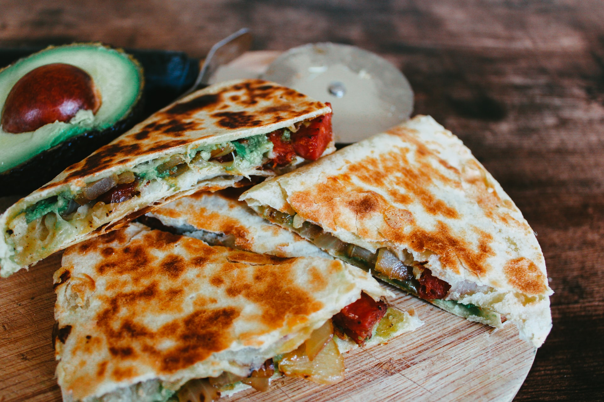

Chicken Quesadilla

Description
Another super simple and yet very tasty dish is the
quesadilla. This dish is also fairly versatile. You
could make it with just cheese and veggies, or any type
of meat you feel like adding!
In this recipe I will be covering a variation that involves
using chicken. If that isnt your style you could always leave
out the chicken and just make a cheese variation!
Ingredients
- 1 tbsp. extra-virgin olive oil
- 2 bell peppers, thinly sliced
- 1/2 onion, thinly sliced
- kosher salt
- freshly ground black pepper
- 1 lb. boneless skinless chicken breasts, sliced into strips
- 1/2 tsp. chili powder
- 1/2 tsp. ground cumin
- 1/2 tsp. dried oregano
- 4 medium flour tortillas
- 2 cups shredded monteray jack
- 2 cups shredded cheddar
- 1 ripe avocado, sliced
- 1 tbsp. vegetable oil
- 2 scallions, thinly sliced
- sour cream, for serving
Steps
- In a large skillet over medium-high heat, heat olive
oil. Add peppers and onion and season with salt and
pepper. Cook until soft, 5 minutes. Transfer to a
plate.
- Heat remaining tablespoon vegetable oil over medium-high
heat. Season chicken with spices, salt, and pepper, and
cook, stirring occasionally, until golden and cooked
through, 8 minutes. Transfer to a plate.
- Add 1 flour tortilla to skillet and top half of the
tortilla with a heavy sprinkling of both cheeses,
coocked chicken mixture, pepper-onion mixture, a few
slices of avocado, and green onions. Fold the other
half of the tortilla over and cook, flipping once,
until golden, 3 minutes per side. Repeat to make
4 quesadillas.
- Slice into wedges and serve with sour cream